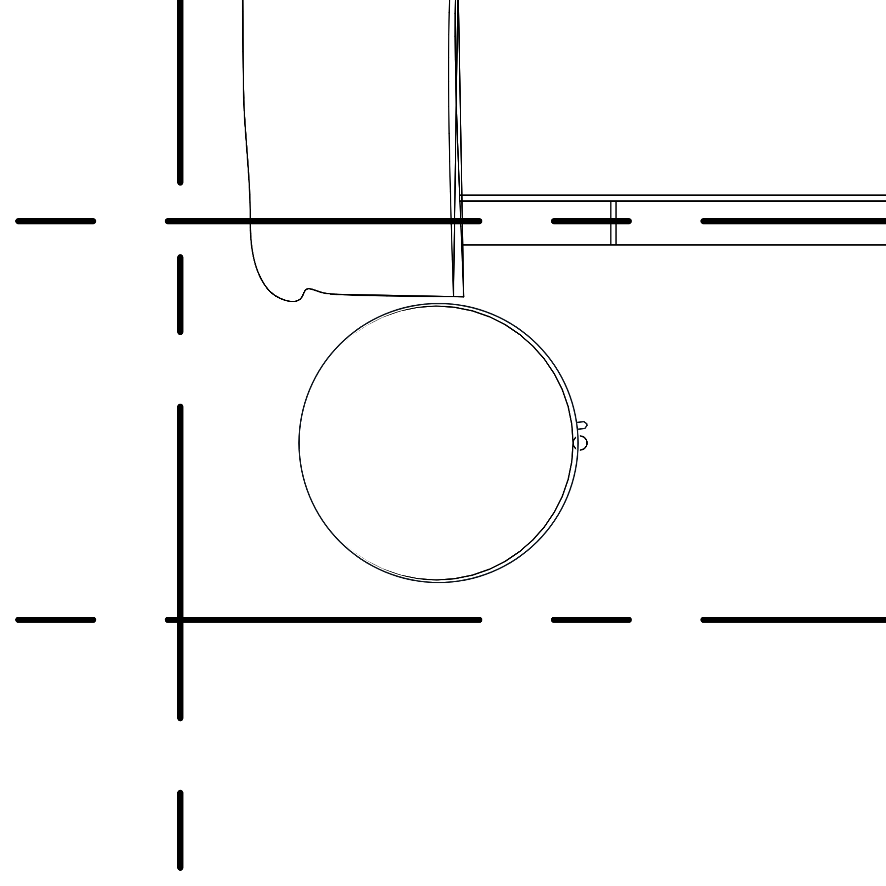
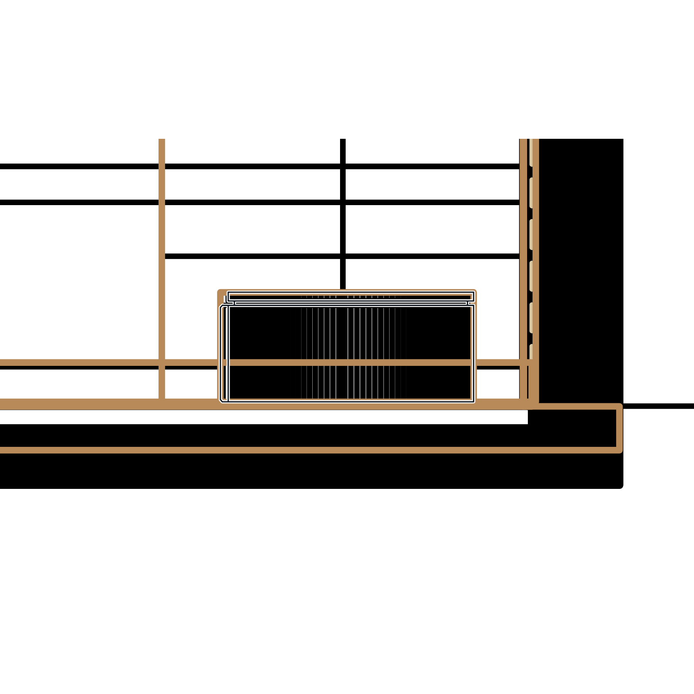
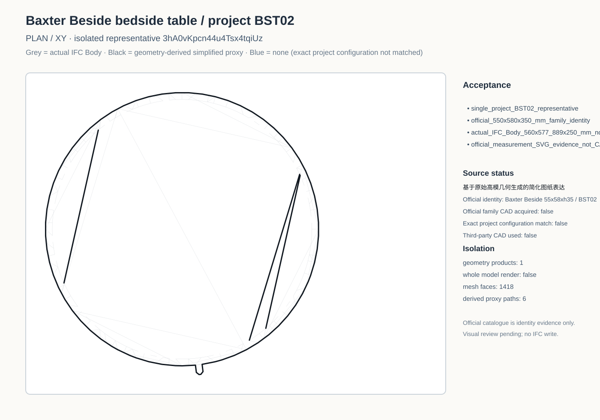
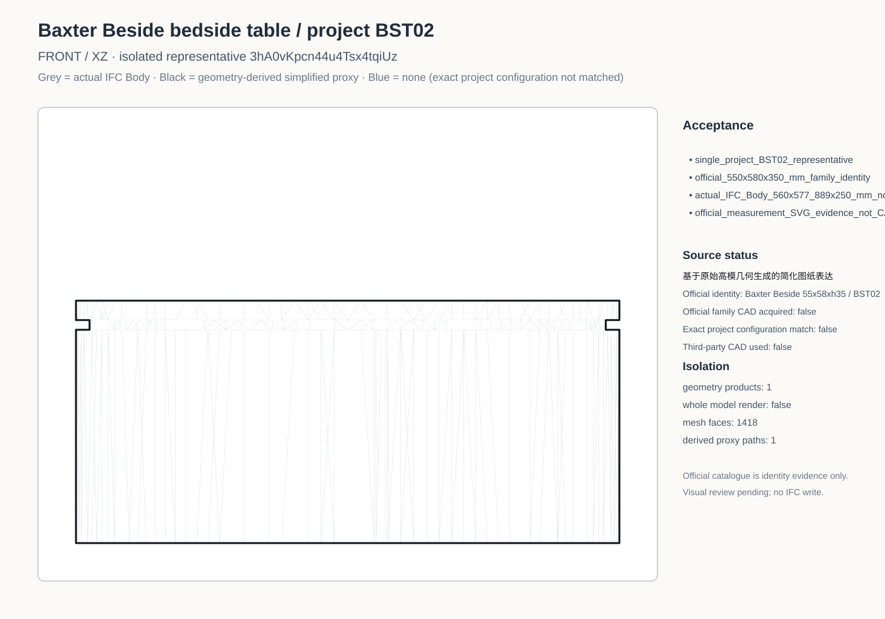
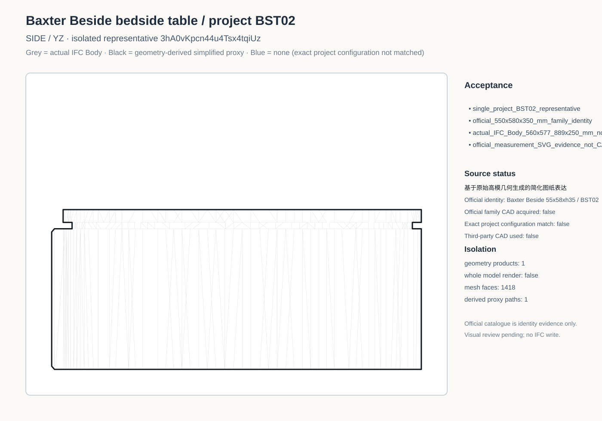
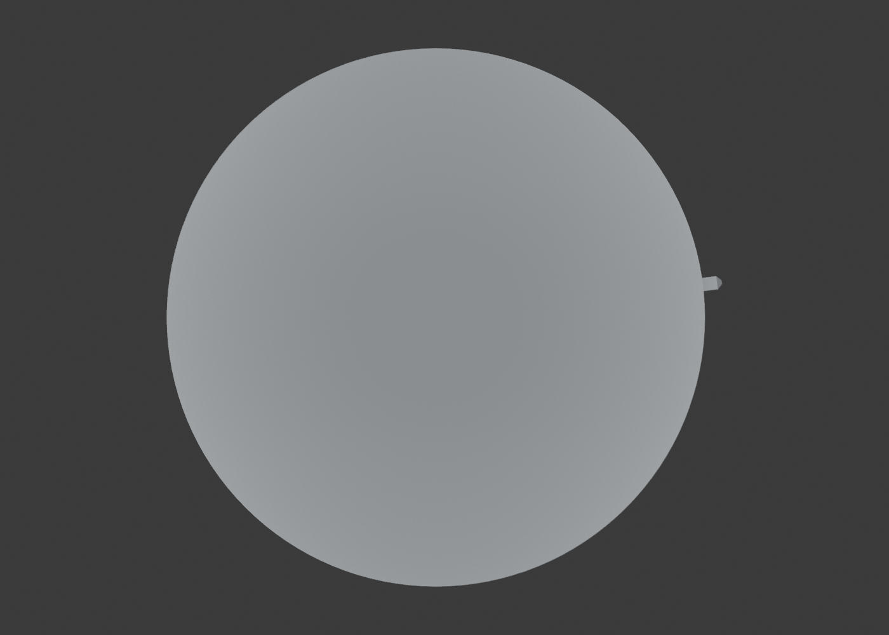
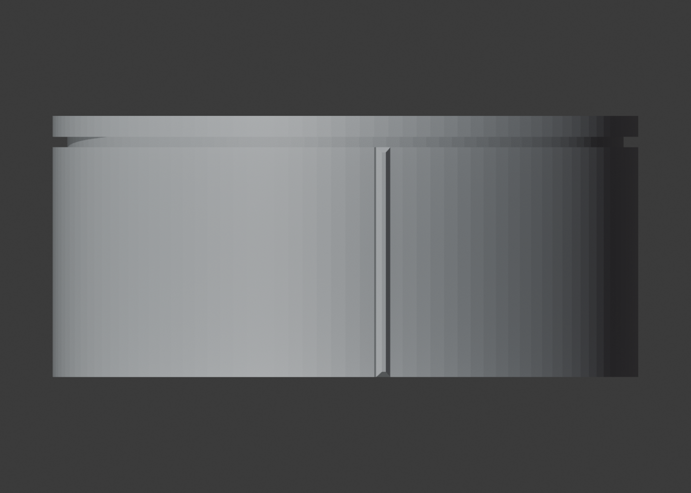
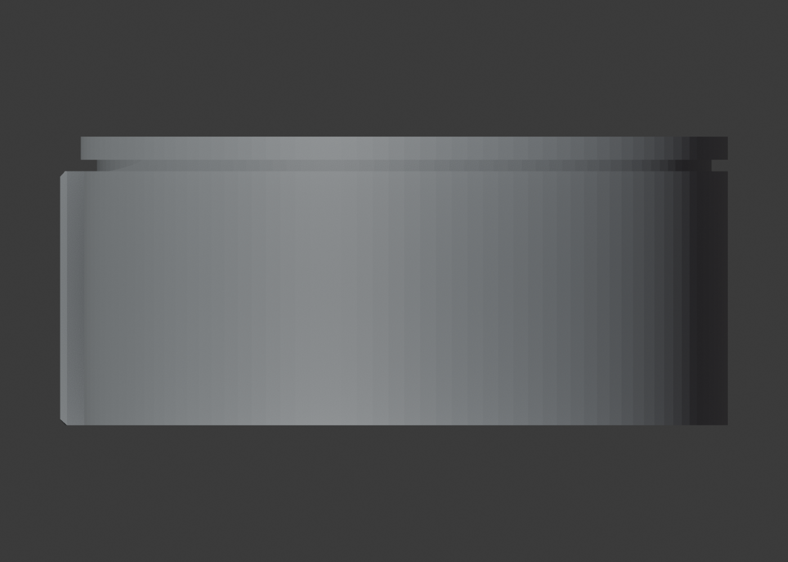
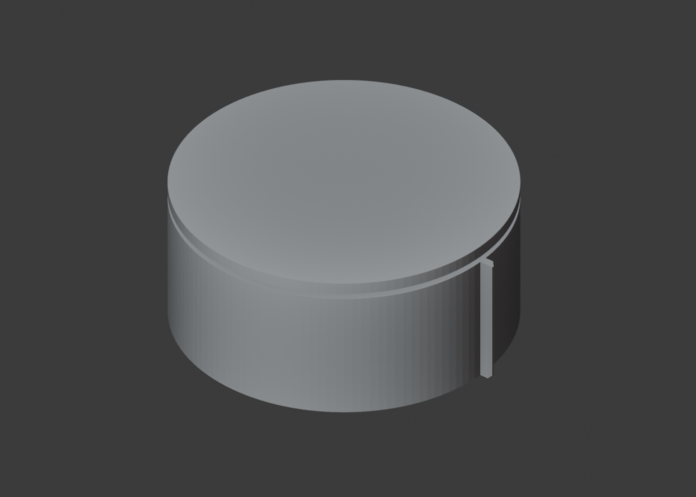

Furniture Plan

Black line = semantic boundaries derived from actual BST02 Body. Native 2D/3D/BIM downloads require Baxter login, so no blue CAD line is shown. The official public PDF/SVG are identity and nominal-dimension evidence only. The actual IFC Body is 250 mm high versus the official 350 mm and is not stretched.


基于原始高模几何生成的简化图纸表达。审核坐标摆正 -7.031244°，把手居中；项目placement未改变。官方尺寸图和本地GLB均有内缩底座，本地模型底座Ø475×30mm；实际Body未建底座。100mm总高差并非仅缺底座。保留实际现高250mm，未添加补件。
Semantic visibility auditLatest semantic contact sheetPlan grey Body comparisonFront grey Body comparisonSide grey Body comparison






7a50b87e8f48a7c2bfbaa9f1dabdfca7155fa684b2325c66aa1ae15c8ab0a25c